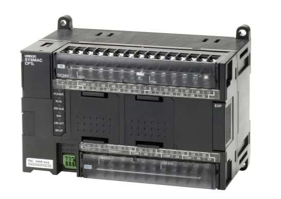

Az Omron CP1L az a PLC, amit nem becsülnek alá eleget. Első pillantásra kis doboz, egyszerű kábel, megfizethető ár — de belül egy teljes értékű, profin konfigurálható vezérlő, amit ipari gépektől kezdve okos szekrényzáráson át léptetőmotoros pozicionálásig mindenhol alkalmaznak.
Azt szeretem benne, hogy USB-kábellel azonnal programozható — nincs külön programozó adapter, nincs driver-bonyodalom, csak bedugod és megy a CX-Programmer. Ez élesben nagyon sokat számít.
Az USB programozás előnye
🔌
Sok PLC-nél külön programozó kábel kell (RS232, USB-serial adapter, driver-probléma), amit el kell vinni a helyszínre.
A CP1L-nél: egy szokásos USB-B kábel (printer kábel) + CX-Programmer telepítve = kész.
A laptop felismeri, a szoftver csatlakozik, és máris online vagy. Hibakereséskor, gyors módosításnál ez rengeteg időt spórol — különösen ha a gép valahol nehezen elérhető helyen van.
Saját fotó — Omron CP1L

Omron SYSMAC CP1L · DC24V · EXP bővítő csatlakozó · POWER / RUN / ERR / USB/ACT / BKUP LED-ek
Technikai adatok — CP1L-M60DR-A
I/O pontok (alap)
36 be / 24 ki = 60 pont
Max. 160 pont bővítőkkel
CPU típusok
CP1L-L (10/14/20) · CP1L-M (30/40/60)
CP1L-E: beépített Ethernet
Programozás
USB-B · RS232C
CX-Programmer vagy Sysmac Studio
Ciklusidő
0.1 µs / utasítás
Jellemzően 1–5 ms valós programban
Pulse output
2 × 100 kHz
Direkt léptetőmotor vezérlés, PLS/ACC utasítás
Analóg (beépített)
2 be + 1 ki (CP1L-M)
0–10V / 4–20mA, 12 bit felbontás
Kommunikáció
Modbus RTU · Host Link · NT Link
CP1L-E: Modbus TCP + EtherNet/IP natívan
Ár (CPU)
€150 – €400
S7-300 töredéke azonos I/O-ra
Interaktív — Ladder Diagram szimulátor
Motor indítás / leállítás — START/STOP logika
Kattints a kontaktusokra a szimulációhoz ▸
Bővítőmodulok
Digitális I/O
CP1W-16ER / 40EDT
8–40 digitális I/O hozzáadása. Relay vagy tranzisztor kimenet. Akár 7 modul sorba fűzhető — 160 pontig.
CP1W-16ER · CP1W-40EDT
Analóg I/O
CP1W-AD041 / DA041
4 csatornás analóg be- vagy kimenet. 0–10V / 4–20mA, 12 bit. PID vezérléshez, hőmérséklet szabályozáshoz.
CP1W-AD041 · CP1W-DA041
Hőmérséklet
CP1W-TS002 / TS102
Termoelem (K, J, T, E, L, U) vagy PT100/PT1000 közvetlen bekötés. Nincs szükség külső átalakítóra.
CP1W-TS002 · CP1W-TS102
Kommunikáció
CP1W-CIF01 / CIF11
RS232C vagy RS422/485 port bővítés. Modbus RTU master/slave, inverter kommunikáció, vonalkód olvasó.
CP1W-CIF01 · CP1W-CIF11
Pozicionálás
CP1W-NC113 / NC213
1 vagy 2 tengelyes pozicionáló modul, beépített profil-generátorral. Léptetőmotor vagy szervó driver közvetlen meghajtás.
A CX-Programmer I/O Table ablaka az első amit meg kell nyitni új projektnél. Itt definiálod:
• CPU típusa — pl. CP1L-M60DR-A (fontos: relay vagy tranzisztor kimenet, AC vagy DC táp)
• Bővítőmodulok sorrendje — a fizikai sorrendnek meg kell egyeznie a szoftverbeli sorrenddel, különben helytelen I/O-cím generálódik
• I/O foglalás — minden modul automatikusan kap egy kezdőcímet (pl. CIO 0.00–CIO 0.07 az első 8 bemenet)
Praktikus tipp: online módban (PLC → Transfer → From PLC) automatikusan beolvassa a valódi konfigurációt — így nem kell kézzel beállítani, elég csatlakozni.
PLC Setup — kommunikáció, ciklusidő, hibakezelés▸
A PLC Setup (Settings → PLC Settings) tartalmazza az összes alacsony szintű beállítást:
• Minimum ciklusidő — ha a program rövidebb mint ez, a CPU vár. Időkritikus rendszereknél fontos (pl. 5 ms minimum)
• RS232C port beállítás — baudrate, paritás, stopbit a soros kommunikációhoz. Modbus RTU esetén tipikusan 9600, 8E1 vagy 19200, 8N1 • Startup mode — RUN vagy PROGRAM módban indul a PLC tápfeszültség visszatérésekor. Gyártósoron mindig RUN!
• Fehér/fekete lista I/O — mely I/O-hibák okozzanak leállást és melyek csak figyelmeztetést
• Battery hiba kezelés — CP1L akkumulátora az óra (RTC) tartásáért felel, nem a programért (flash-ben van)
Pulse output konfiguráció — léptetőmotor▸
A CP1L-M beépített 2 darab 100 kHz-es pulse output csatornával rendelkezik (Q0.00 és Q0.01 kimenetek — tranzisztor változat kötelező!).
Konfiguráció lépései: • PLC Setup → Built-in Input/Output → Pulse Output 0/1 beállítás
• Üzemmód: CW/CCW (kétirányú) vagy Pulse+Direction (Step/Dir — a legtöbb driver ezt várja)
• Gyorsítás/lassítás: trapéz vagy S-görbe profil — ACC utasítással programozható
Ladder utasítások: • PLS2 — megadott sebességre és pozícióba megy, majd megáll
• ACC — gyorsítási/lassítási profil beállítása
• INI — pozícióregiszter nullázása, mozgás megszakítása
• PRV — aktuális pozíció és sebesség olvasása
Egy CP1L-M + léptetőmotor driver + 2 végállás kapcsoló = komplett pozicionáló rendszer, külön motion controller nélkül.
Modbus RTU kommunikáció beállítása▸
A CP1L soros portján Modbus RTU master vagy slave üzemmódban tud kommunikálni — inverterekkel, HMI-kkal, érzékelőkkel.
Master beállítás (CP1L olvas/ír egy invertert): • PLC Setup → Serial Port 1 → Mode: Modbus RTU Master • Baudrate, paritás az inverter kézikönyve szerint (tipikusan 9600 8N1 vagy 19200 8E1)
• Ladder-ben: PMCR utasítás — Modbus function code, slave cím, regiszter cím, adatok
Slave beállítás (HMI olvassa a CP1L-t): • Mode: Modbus RTU Slave, slave ID beállítás
• A CIO, DM, HR területek automatikusan elérhetők Modbus regiszterként
Tipp: ha RS485 kell (hosszabb kábel, több eszköz), a CP1W-CIF11 modul hozzáad egy RS422/485 portot — az alap RS232 port mellett párhuzamosan használható.
Memóriaterületek — CIO, DM, HR, AR, TIM, CNT▸
A CP1L memóriaterületei a Ladder programozás alapjai:
• CIO (0–6143) — I/O és belső relék. CIO 0–99: fizikai I/O, CIO 100–: belső használat
• DM (D0–D32767) — adatmemória, 16 bites szavak. Receptek, beállítások, mérési adatok tárolása. Power-fail safe — áramkimaradás után is megmarad
• HR (H0–H511) — holding relék, szintén power-fail safe. Állapotjelzők, amik nem nullázódnak le áramkimaradáskor
• AR (A0–A959) — speciális segédterületek. A448–A511: olvasható rendszerinformációk (hibakódok, ciklusidő, port állapot)
• TIM / CNT — időzítők és számlálók. CP1L-ben 4096 db. TIM0–TIM4095, CNT0–CNT4095
• IR / DR — index és adatregiszterek indirekt címzéshez. Táblázat-feldolgozásnál, receptkezelésnél nélkülözhetetlen
Praktikus szabály: amit a HMI-nak meg kell jelenítenie → DM-be. Amit a program belső állapotként kezel → CIO 100+. Amit áramkimaradás után is meg kell tartani → HR.
CX-Programmer — online monitoring és hibakeresés▸
Online módban a CX-Programmer az egyik legjobb PLC diagnosztikai felület:
• Ladder monitoring — az aktív kontaktusok és tekercsek élő zölddel világítanak. Azonnal látod, melyik feltétel teljesül és melyik nem
• Watch window — bármely memóriaterület (DM, CIO, TIM) valós idejű figyelése, módosítása. Ideális rekceptek teszteléséhez
• Force set/reset — bármely bit kényszerítetten be- vagy kikapcsolható. Fizikai I/O szimulációjához szükség van rá — pl. ha nincs kéznél érzékelő
• Error log — PLC → Error Log: az összes korábbi hiba időbélyeggel. Ritka, intermittáló hibák visszakövetéséhez arany
• Differenciál szkenner — változásra figyelő módban látható, melyik bit mikor változott — sporadikus hibáknál életmentő
Tipp online módosításhoz:Program → Online Edit — a futó programot módosíthatod anélkül, hogy a PLC megállna. Kritikus gépeknél ez az egyetlen elfogadható módszer.
PID vezérlés — beépített PID utasítás▸
A CP1L tartalmaz egy beépített PID funkciót — nincs szükség külön modul vásárlásra egyszerű hőmérséklet vagy nyomásszabályozáshoz.
• PID utasítás: PIDAT — beállítási érték, mért érték, kimeneti érték, és egy 25 szavas paraméterblokk (DM-ben)
• Paraméterek: P arány, I integrálási idő (perc), D deriválási idő, kimeneti határ min/max, mintavételi idő
• Auto-tuning: PIDAT AT flag = 1 → a PLC maga méri fel a folyamatot és számol paramétereket
• Kaszkád PID: két PIDAT utasítás egymás után — külső hurok kimenet = belső hurok setpoint
Tipikus alkalmazás: hőmérséklet szabályozás CP1W-TS002 termoelemmel + CP1W-DA041 analóg kimenettel + SSR (Solid State Relay). Teljesen moduláris, egy laptop és egy USB kábel elég a beállításhoz.
I/O méretező kalkulátor
Digitális bemenetek (DI)
Digitális kimenetek (DO)
Analóg bemenetek (AI)
Analóg kimenetek (AO)
Pulse output tengelyek
CP1L vs S7-300 vs S7-1200
Szempont
CP1L
S7-1200
S7-300
Ár (alap CPU)
€150–400
€300–600
€800–2000
Programozás
USB-B (normál)
USB (saját kábel)
MPI adapter
Bővíthetőség
max. 7 modul, 160 I/O
max. 8 modul
korlátlan rack
Pulse output
2×100 kHz beépített
4×100 kHz
külön modul kell
Modbus RTU
natív
natív
CP modul kell
Ethernet
CP1L-E változat
beépített
CP343 modul
Jövőállóság
aktív gyártás
S7-1200 hosszú táv
EOL 2023
Ideális méret
10–120 I/O
14–284 I/O
50–2048 I/O
Személyes tapasztalat
A CP1L-lel való munka meggyőzött arról, hogy egy PLC értékét nem az ára vagy a neve határozza meg, hanem az, hogy mennyire van arányban a feladattal. CX-Programmer-ben programozva, USB-n csatlakozva, Modbus RTU-n egy frekvenciaváltóval kommunikálva — ez egy komplett, professzionális rendszer, ami töredék annyi időbe kerül beállítani, mint egy S7-300. A bővítőmodulok rendszere pedig lehetővé teszi, hogy a projekt növekedésével együtt nőjön a hardver — nem kell mindent előre megvenni.